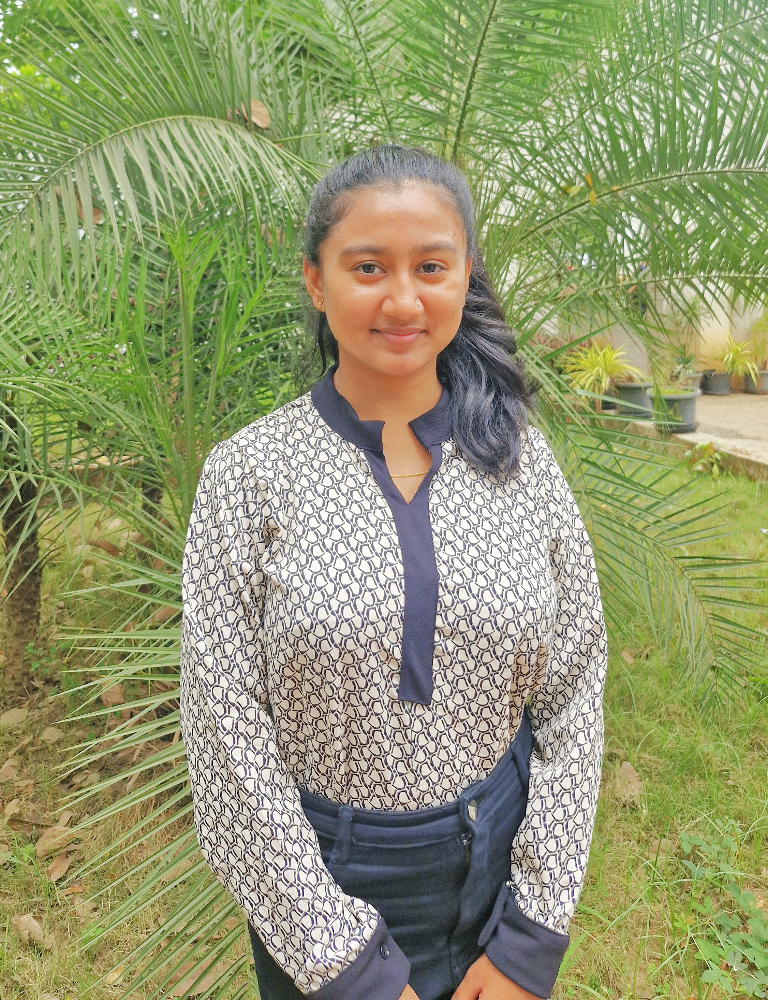

I'm Ankita Chavan
Graduate Student at KLS Vishwanathrao Deshpande Institute of Technology
BE in Electronics and Communication


Graduate Student at KLS Vishwanathrao Deshpande Institute of Technology
BE in Electronics and Communication
I am a passionate and motivated engineering graduate with a background in Electronics and Communication. I enjoy turning ideas into real-world solutions through problem-solving, creativity, and continuous learning. My interests lie in software development. With a strong foundation in software, I aim to build impactful projects and grow as a well-rounded technology professional.
CGPA : 8.4/10
Gained hands-on experience in front-end web development using HTML, CSS, Basics of JavaScript.
Built and styled responsive web pages, applying modern design principles.
Succesfully completed the internship with an 'A+ grade', demonstrating strong performance and commitment.
Participated in a 24-hour national level hackathon and developed a Table Reservation Web Application from scratch.
Utilized HTML, CSS and JavaScript for frontend development, ensuring a responsive and user-friendly interface.
Collaborated with team members using Bootstrap for styling and PHP with MySQL for back-end and database management.
Personally contributed to designing and developing the front-end of the application, focusing on clean UI and smooth functionality.
Designed and implemented an object detection alarm system using an Ultrasonic Sensor and Arduino.
The system triggered an alarm when an object was detected within a certain range, showcasing basic automation and real-time response.
Gained hands-on experience with Arduino programming, sensor integration, and circuit design.
Focused on coding, sensor calibration, and optimizing detection accuracy dusring the hackathon.
Ms. Ankita A Chavan, Mr. Abdul Shaikh, Mr. Rahul Madiwal, Mr. Atiqur Rehman Sayed, Dr. Madhusudan Kulkarni, "Handwriting Recognition and Information Retrieval System", International Conference on Next Generation of Green Information and Emerging Technologies, 10th May 2025.
Python Programming
HTML, CSS, JavaScript
VS Code, MySQL, Git/GitHub, Microsoft Office Word and Power Point
Management and coordination skills, Problem Solving, Time management, Team Work, Communication
Designed a system that converts handwritten text into readable digital content and retrieves relevant information based on the extracted data. The solution focuses on accurately interpreting handwritten input and efficiently searching through stored records to present meaningful results. This project highlights skills in problem-solving, data processing, and intelligent information management.
Built a smart table reservation system designed to streamline the booking process for restaurants and cafes. The system allows users to check real-time availability, reserve tables in advance, and receive instant booking confirmations. Developed under time constraints during a hackathon, the project emphasizes quick problem-solving, team collaboration, and efficient user experience design.
This portfolio showcases a collection of projects that reflect my passion for building practical and user-focused solutions. Each project demonstrates my ability to analyze real-world problems, design efficient systems, and deliver results under deadlines. The work featured here represents my growth, creativity, and commitment to continuous learning.
Designed a system that detects nearby objects and triggers an alert when an object is within a certain distance. The project focuses on real-time obstacle detection and warning mechanisms, ideal for applications like automated security, parking assistance, or blind spot monitoring. It highlights skills in sensor-based input handling, system design, and automation logic.
Developed and implemented a 16-to-8 multiplexer as part of a digital circuit design project. The design focused on optimizing area, speed, and power efficiency using VLSI principles. The project demonstrates understanding of digital logic, hierarchical circuit design, and hardware optimization techniques essential for integrated circuit development.
Hackathon | Wave 2.0 Certificate, Bagalkote.
Hackathon | Avinya Certificate, Haliyal.
Internship Certificate, Dandeli.
Python Certificate, Scaler.
CSS Certifiacte, Hackerrank.